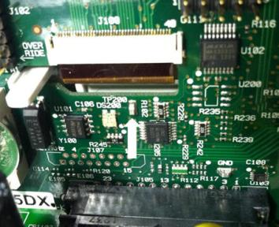
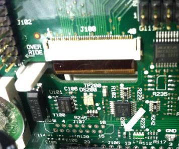

Before troubleshooting or repairing the instrument, make sure the failure is in the instrument rather than any external connections. Also make sure that the instrument was accurately calibrated within the last year (see Calibration Interval). The instrument’s circuits allow troubleshooting and repair with basic test equipment.
|
|
DO NOT swap the motherboard or the front panel board from one instrument to another. These boards contain model number and serial number information that uniquely identifies a specific unit, and boards that are mismatched to the instrument may result in problems with its performance, licensing, serviceability, importability/exportability or warranty. |


|
|
Ensure that all connections (front and rear) are removed when self-test is performed. During self-test, errors may be induced by signals present on external wiring, such as long test leads that can act as antennas. |

